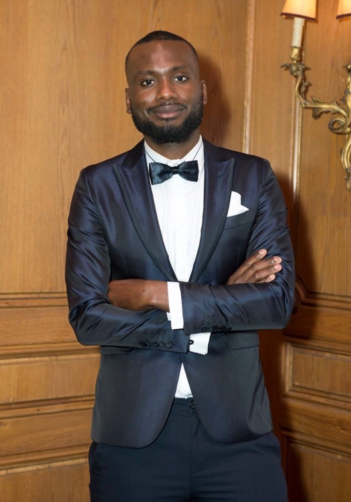

Where European institutional architecture meets the field, someone has to make the translation hold.
Fifteen years across six European jurisdictions and West Africa. Seven languages. A publication series read inside the institutions I write about. I work where mandates are complex, authority is fragmented, and outcomes depend on whether the people in the room can be made legible to each other.
A short essay series on what holds and what breaks where institutional mandates meet delivery. Each issue takes one structural problem encountered in practice, names the mechanism, and tests it against the evidence. Approximately 1,100 readers; the highest concentrations sit at the Quai d'Orsay, the International Organisation for Migration, the European Commission, the European Training Foundation, and the European Investment Bank.
Issue 02 is under review at World Development (Elsevier).
What Europe's AI sovereignty actually requires. An essay on open-weight models, technology transfer, and the structural conditions under which sovereignty rhetoric reproduces the dependency it claims to oppose.
DOWNLOAD PDF ↓When enforcement mechanisms exist on paper but receive neither budget nor political backing, the instrument teaches the regulated population that non-compliance carries no cost.
PDF ↓When faith-based organisations receive humanitarian funding without accountability separation between their aid mandate and their evangelisation mandate, the instrument ceases to be humanitarian.
PDF ↓When a programme's target population exists in the logframe but not in the field, the programme builds compliance infrastructure around a demographic fiction.
PDF ↓When reporting requirements exceed the administrative capacity of the implementing partner, the reporting system produces documents rather than accountability.
PDF ↓How do you operate when structure has not caught up with what the situation demands?
This diagnostic is drawn from fifteen years of observing five recurring patterns in how senior professionals navigate pressure, coordinate under constraint, and translate mandate into delivery. It takes five minutes. The profile you receive names your operational strengths and the blind spots that come with them.
I enter systems that are under pressure and I name the structural problem before I propose the repair. This is not a consultancy formula; it is a disposition formed across fifteen years and tested in settings where it cost me something. In 2020, I co-founded an electric vehicle venture with a nano-material hub motor, grounded in 1960s design principles and contemporary material science. The project assembled a distributed team across several countries and generated significant public attention. It did not reach production; my misread of the gap between technical proof-of-concept and industrial capital requirements was decisive, and I have written about it publicly because a practitioner who only narrates success is selling comfort, not method. The method is the same whether the system is a fifteen-partner donor consortium in Dakar or a two-hundred-room hotel in Bordeaux: surface the real constraints, align the actors who do not share a language, and hold the translation until the outcome is visible.
If you work where institutional mandates meet field delivery and the translation is breaking down, I may be useful.